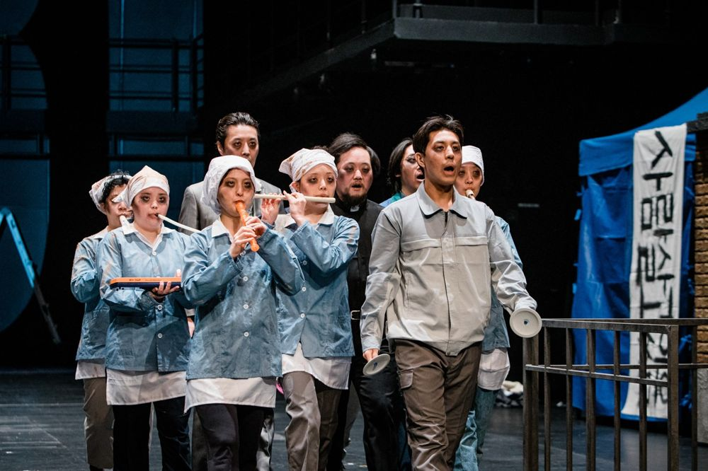

일제강점기, 한 독립군이 나무 전주 꼭대기를 점거한다. 만주로 가지 않고 이 땅에 남아 일어나는 일을 빠짐없이 기억하겠다는 결심이다. 그 점거는 탄약고를 점거한 병장, 고해실을 점거한 신자, 공장 지붕에 오른 노동자, 개발을 막으려 나무 위에 오른 활동가로 이어진다. 100여 년의 시간을 건너 점거자 혹은 엑스트라들의 이야기가 펼쳐진다.
2023.3.4–12 / 대학로예술극장 대극장 - 공연예술창작산실 '올해의 신작'
2025.3.14–16 〈엑스트라 연대기〉 / 춘천 축제극장몸짓 - 공연예술창작산실 2차 제작지원
작: 전성현
연출: 윤한솔
음악: 옴브레
기획: 스탭서울
출연(2023): 이동영, 정양아, 정연종, 이승훈, 김용희, 김원태, 박유진, 박수빈, 이지원, 강마로, 최지현, 박기원, 김수옹 외
출연(2025 춘천): 김수웅, 김용희, 김원태, 김효영, 박기원, 박수빈, 박은경, 윤자애, 이동영, 정연종, 조문정, 최지현
2025.3.26 관람 후기 (춘천)
2023.3.28 관람 후기
2023.3.11 관람 후기
이전: 〈Fake News 2022-MAPHIKO〉 | 다음: 〈주은길 단막극전〉
아카이브로 돌아가기 | 아무 작품이나
발행일 2026.11.10